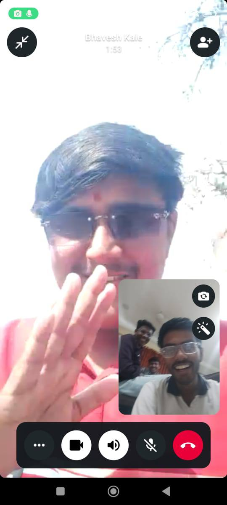
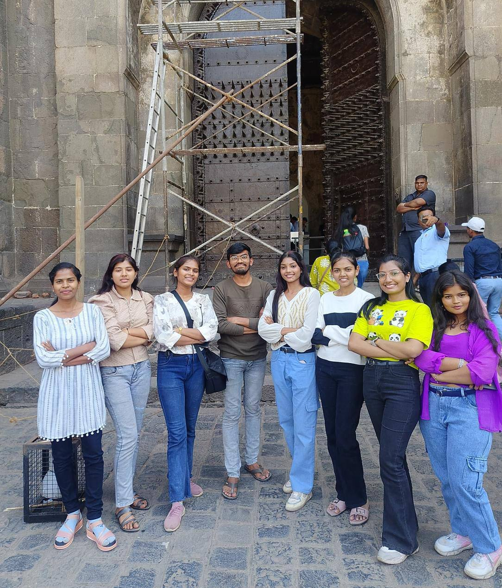
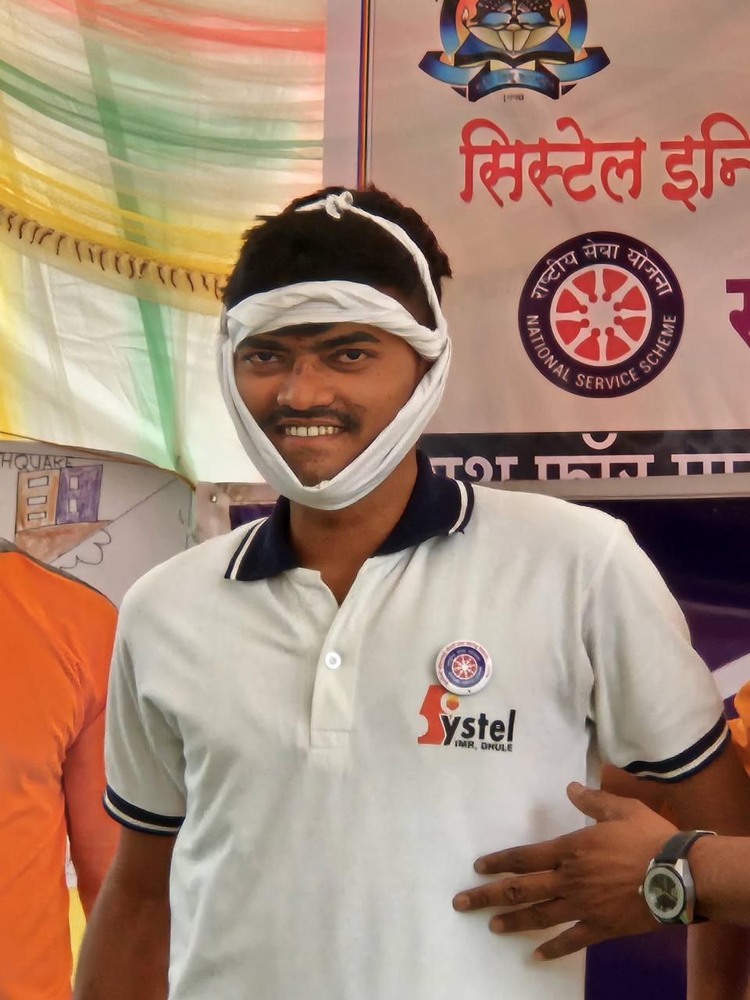
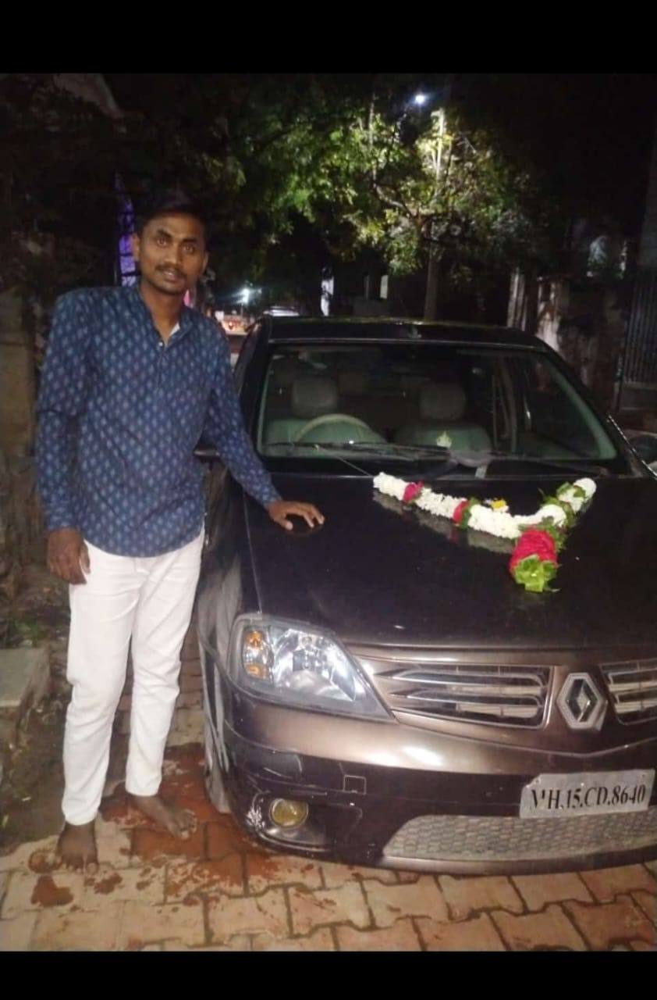
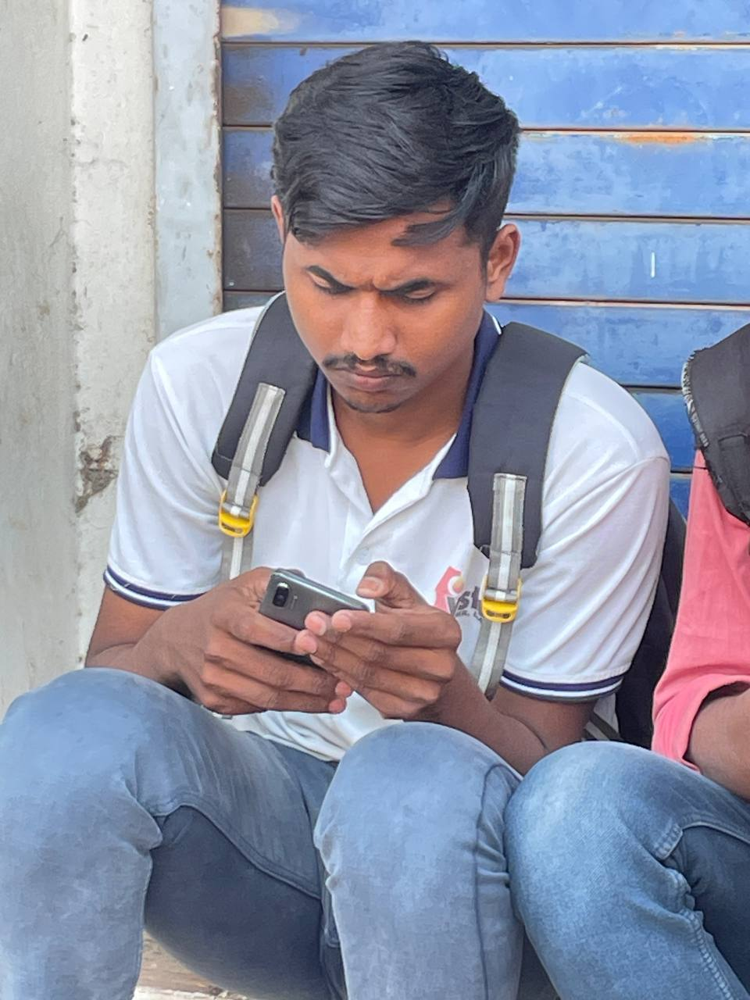

🤣भावेश दादा लाईव्ह कॉन्फीरन्स अँड फ्री गायडन्स:
😎जय संताजी चा नारा देत अध्यक्ष मा.श्री.भावेश डी.काळे हे उत्तर प्रदेश प्रयागरा ,चुत्रकूट,काशी,विरंदावन येथ गेले आहेत. त्यांच्या सोबत दूरचित्रवणी सादत त्याचा निरोप विचारला. आणि आपल्या सर्व जय संताजी च्या कार्यकर्त्यांसाठी देवाकडे आशीर्वाद मागितले आणि सांगितलं की जे ही बॅक लागलेले असतील ते ऑल क्लिअर निघावे असे त्यांनी या संभाषणात सांगितले 🤣.

काय बोलणार राव आता तुमहीच सांगा काय करावा।🙄

🙄आता सूत्रांकडून सांगण्यात येत आहे की रुष्या भाई यांचा डोक्यावर घमु दादा यांचा हात असावा. आणि खुंखार गुंड रुश्या भाई आणि चेत्य डॉन हे दोन्हीही घमू खत्री या साठी काम करतात.🍌 (लैन्गिक कढरे, धुळे)

New golden band che मालक सौ. सुमित दादा भदाणे यांनी नवीन वाहण घेतल्या बद्दल अभिनंदन🎉🔥कृपया गाडी च्या कलर वर जाऊ नका ते मॅटचिंग थिम आहे सुमित दादा ची (लैन्गिक कढरे, धुळे)

Comments: